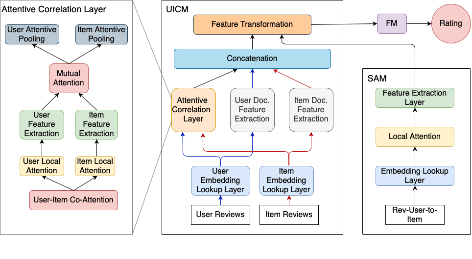
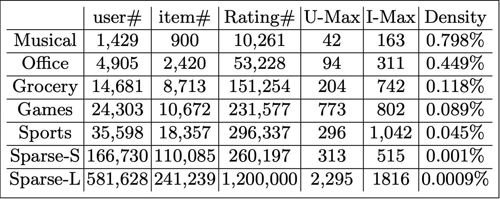
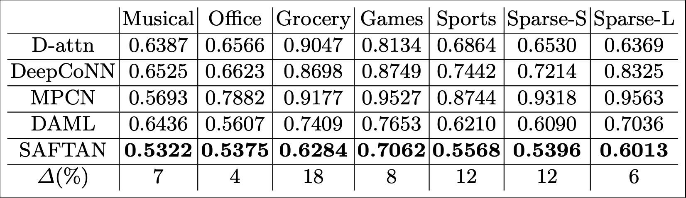

Currently Working On
Review-based Recommender System
A Framework of Composing Semantic Analysis and Feature Transformation on Attentive Networks for Rating Prediction
Introduction
E-commerce has gradually been playing an important role in people’s lives. Therefore, we can make use of recommendation systems due to better user experience. Matrix Factorization (MF) based methods achieve fairly good performances on recommendation tasks. However, there exist several crucial issues with MF-based methods such as cold-start problems and data sparseness. In order to address the above issues, numerous recommendation models are proposed which obtained stellar performances. Nonetheless, we figured that there is not a more comprehensive framework that enhances its performance through retrieving lost information. Hence, we propose a novel approach to tackle the aforementioned issues. A hierarchical construction and a feature transformation technique are employed in this proposed framework. The performance excels in comparison to state-of-the-art models by testing on five real-world datasets. Additionally, in order to verify the robustness of our framework, two sparse datasets with different sizes are generated by sampling from a real-world dataset. The sampled datasets are much less in density. Thus, experimental results verified that our framework can extract useful features even under sparse data.
The Proposed Framework
Data:
Experimental Results
Future Works and Contributions
In this project, we propose a state-of-the-art method which utilizes distinctive pathways to process different information. For the main review, multiple attention mechanisms are employed to extract high level information. As for the other secondary reviews, we utilize Long Short-Term Memory to retrieve the overall semantic information as feature supplement for the main review. In the experiment section, we verify that our model can handle data with various densities and give precise predictions. The proposed framework excels to capture user and items’ interactive features amongst other models. For further studies, we are going to conduct experiments on various datasets to verify the robustness of the proposed framework and other feature extraction methods will be further experimented for better performance.
Data-Classification With Keyword Retrieval
Keyword Retrieval for Data Classification on Chinese Products
On going Tasks
- CKIP Tokenization for Chinese Words
- Analyze the Chinese Corpus and Retrieve Keywords
Progress